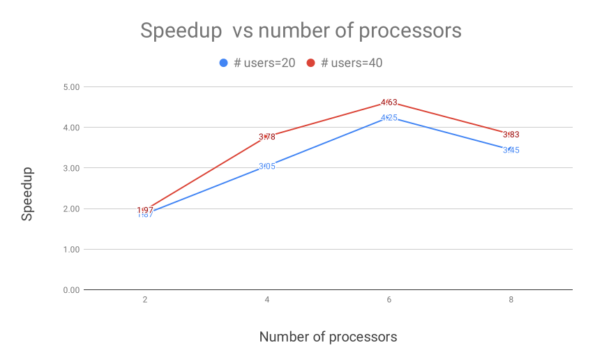
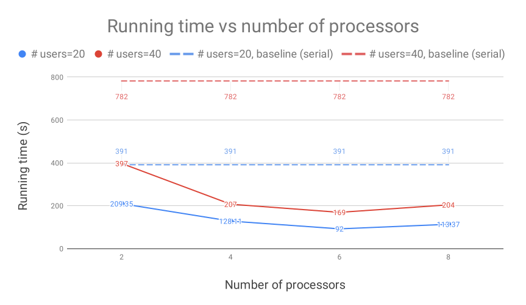
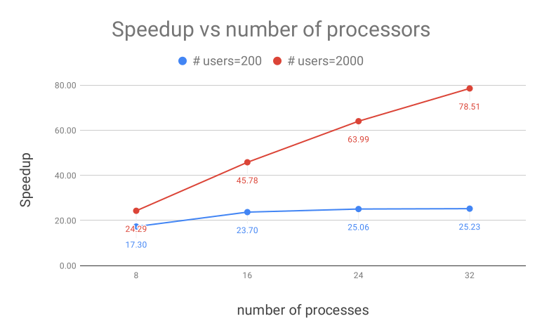
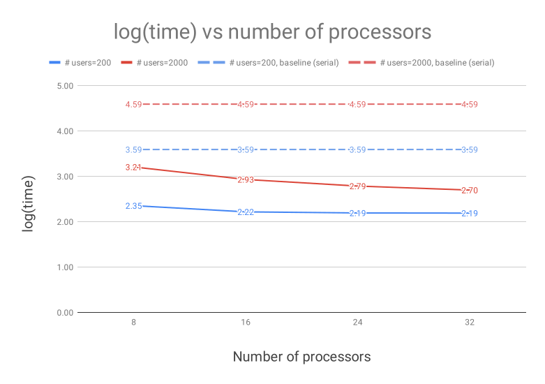

Modern mobile devices have access to a wealth of data suitable for learning models, which in turn can greatly improve the user experience on the device. For example, language models can improve speech recognition and text entry, and image models can automatically select good photos. However, this rich data is often privacy sensitive, large in quantity, or both, which may preclude logging to the data center and training there using conventional approaches.
Federated Learning is a decentralized model training approach by leaving the training data distributed on the mobile devices, while learning a shared model by aggregating locally-computed updates.
The benefits of Federated Learning:
Privacy: with no direct access to personal data
Efficiency: local training on multiple local devices
Scalable: Gboard from Google already adopted this framework
The procedure of Federated Learning:
The server opens a new round of training
The clients download the latest version of the model from the server and update the model using their local data. Those updates are sent to the server
The server gathers all updates and applies Federated Averaging to improve the shared model
The shared model is now ready for all clients to download for the next round
Problem
We notice there is an urgent need of communication-efficient learning framework for deep networks using decentralized data, for example, modern mobile devices (https://arxiv.org/abs/1602.05629). However, in order to learn such model from billions of clients (potentially), an efficient simulation paradigm (through parallel programming) is necessary. Researchers need a testbed to validate performance. It is not feasible to buy 1e4 devices like Google to build such a testing environment, so researchers often use workstation with several GPUs to simulate behaviors of tens of thousands of clients. In practice, numerous local models are trained on several GPUs, and local weights are copied and updated to global model on CPU in every round of training. Since data are distributed in each client, the communication costs dominate in the federated model. And big compute is needed for weights aggregation. The current implementation is serial code, which will read weights from clients one by one, this implementation is very inefficient, the utilization of GPU is lower than 10%. Therefore, we propose a parallel implementation for this model.
Implementation
Model Design
In our simulation paradigm, we allow users to implement their own algorithm/models (in python). Our framework will automatically utilize accessible GPU resources to greatly accelerate the lengthy training process. Since the default GPU utilization ratio is less than 10%, which is far away from its potential, we believe our model will utmostly increase its rate and ease the process of model training. The technical details of the framework are shown in the next section. In order to compare the performance of our model and the baseline (pytorch default settings, without tuning any parameters), we use MNIST and CIFAR10 as our training dataset. We implement the classical feedforward neural network and use stochastic gradient descent for learning.
Fig 1. An illustration of Federated Learning
Our design of OctoPy is shown in Fig 2. We first initialize the global model in CPU. The global model is updated at every round of GPU job finished (defined below) until all the data has been used for learning. Then we initialize all accessible GPUs (in this case, let’s say we have n) and create as many as local models in each GPU as possible. The job of local model is to train the model on a batch of data received from dataloader. The number of local models in each GPU depends on the number of threads and GPU memory. Notice that in order to minimize the time required for initialization, we only initialize all the local models once at the very beginning. In addition to local models, in each GPU, we also create a partial global model to receive weights update from the locals. After passing its updates trained on the previous batch of data to the partial global model, each local model will instantaneously receive a new batch of data from dataloader. In order to avoid asynchronization between partial global model and local models, we implement an efficient queue structure to lock the locals. Therefore, each round of GPU job is defined as the time every local model has finished passing its weights to the partial global model. Next, the partial global model will update its weight to the global model in CPU. We estimate that since commute between CPU and GPU is inefficient, our design will greatly shrink the commuting costs. Moreover, in order to accelerate the rate of convergence, when we initiate a new round of training, we update every local model with the weights from the global model trained thus far and use them as starting weight. Similarly, to avoid too often commute between CPU and GPU, we store the latest round of global model in each GPU.
To avoid workload imbalance among models, we divide the dataset into same size of batch and load each batch to local model. We estimate that even division of the full dataset to each local model will utilize GPU resources to its best.
Main steps:
Global model send its latest version to each GPU
In each GPU, local models load the true global model and start training
In each GPU, partial global model aggregates the weights from local model when its training complete
In each GPU, after aggregating the updated weights from all the local models, partial global model will send the federated average weight back to the global model
Fig 2. An illustration of our model
Advanced Features
Use CUDA for GPU programming
Extended from python multiprocessing module
Communication among processes: Queue (Manager was not overridden by PyTorch)
ASync among processes: signal to pause/restart, clear(), set(), wait()
Performance
Test 1:We trained some local models - LeNet using dataset MNIST on 2 NVIDIA 1080 TI GPUs with different number of processors on each GPU. All our tests could be reproduced using the codes in our github repo.
Infrastructure
GPU
GPU Model: NVIDIA 1080 TI
NVIDIA CUDA® Cores: 3584
Boost Clock (MHz): 1582
Memory Speed: 11 Gbps
Standard Memory Config: 11 GB GDDR5X
Memory Interface Width: 352-bit
Memory Bandwidth (GB/sec): 484
CPU
CPU Model: Intel(R) Core(TM) i7-5960X CPU @ 3.00GHz
Processor: 15
CPU MHz: 1200.165
Cache size: 20480 KB
CPU Cores: 8
Operating System: Ubuntu 16.04.4 LTS (debian)
Results

Fig 3. Speedup of models trained on 2 GPUs

Fig 4. Running time of models trained on 2 GPUs
In Figure 3, with increase of # processors, we can see a linear increase in speedup (from 2 to 6 processors). However, limited by CPU memory, even if we further increase # processors (from 6 to 8 processors), the speedup won’t increase correspondingly. Our hypothesis is that CPU has to transfer caching from its memory to local disks when size becomes relatively large compared with its memory.
Test 2:We trained some local models - LeNet using dataset MNIST on 8 NVIDIA 1080 TI GPUs with different number of processors on each GPU. To mitigate the limitation by CPU memory, we changed the CPU model.
Infrastructure
CPU
CPU Model: Intel(R) Xeon(R) Platinum 8168 CPU @ 2.70GHz
Processor: 95
CPU MHz: 1200.982
Cache size: 33792 KB
CPU Cores: 24
Operating System: Ubuntu 16.04.4 LTS (debian)
Results
We obtained a better result compared with test 1.

Fig 5. Speedup of models trained on 8 GPUs

Fig 6. Running time of models trained on 8 GPUs
Figure 5 confirms our hypothesis: With larger CPU memory, speedup can still increase linearly even beyond 32 processors. For both Figures 3, 5, we notice the same trend such that with increasing amount of users, the speedup is more obvious. For example, in Figure 5, compared between 200 (blue) and 2000 users (red), with increase of # processors, the speedup of the larger one (2000) increases linearly, while the speedup of the smaller one (200) doesn’t change significantly. The phenomenon is also consistent with our hypothesis: With more training data available, the parallelizable part of codes will save more time (compared with serial part). We can see that, with our implementation, we can greatly increase GPU utilization (plot 2) to more than 5 fold. The utilization rate of GPU can increase from 10% to over 50% now.
Discussion
Speedup
With increase amount of processors, we can see a linear increase in speedup (from 2 to 6 processors). However, limited by CPU memory, even if we further increase number of processors (from 6 to 8 processors), the speedup won’t increase correspondingly. Our hypothesis is that CPU has to transfer caching from its memory to local disks when size becomes relatively large compared with its memory. Figures C,D confirms our hypothesis: With larger CPU memory, speedup can still increase linearly even beyond 32 processors.
Scalability
With increasing amount of users, the speedup is more obvious. The phenomenon is also consistent with our hypothesis: With more training data available, the parallelizable part of codes will save more time (compared with serial part).
Improvement
We can see that, with our implementation, we can greatly increase GPU utilization (plot 2) to more than 5 fold. The utilization rate of GPU can increase from 10% to over 50% now.
Challenges
To deal with pytorch dataloader, we need to adjust batch size to fit CPU cache size. Otherwise, if the batch of data size is overflow, it would be written to disk. This would consume a large amount of time to transfer data from CPU to GPU. We mitigate the initialization overhead by avoiding repeatedly initialize local models in GPU each round. To mitigate communication overhead between GPU and CPU, we only send the model weights instead of sending the whole model.
Future Works
In the future, we will design the API for this library and write up the documents. We would also implementation this model with multi-nodes. More test cases could be added to handle errors (e.g. deal with incomplete models).
References
McMahan, H. B., Moore, E., Ramage, D., & Hampson, S. (2016). Communication-efficient learning of deep networks from decentralized data. arXiv preprint arXiv:1602.05629.
Konečný, J., McMahan, H. B., Yu, F. X., Richtárik, P., Suresh, A. T., & Bacon, D. (2016). Federated learning: Strategies for improving communication efficiency. arXiv preprint arXiv:1610.05492.